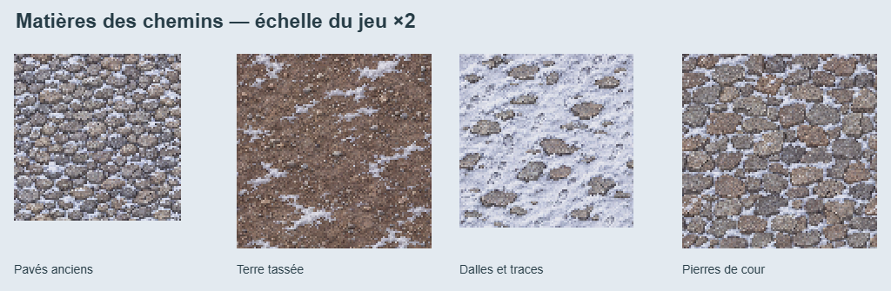
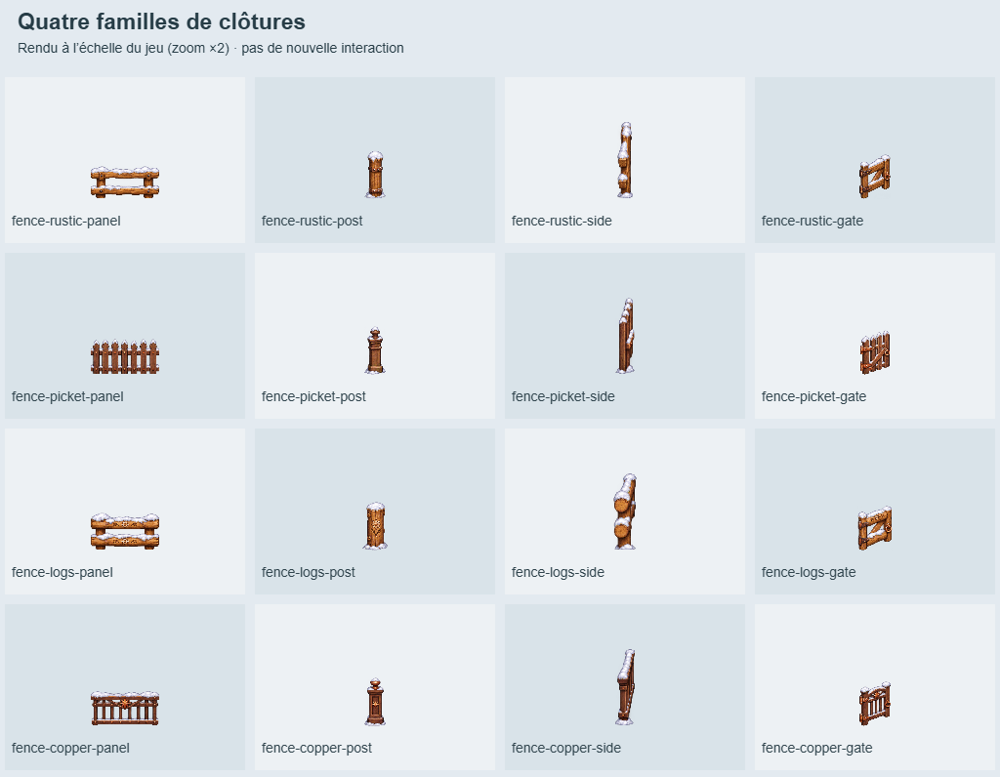
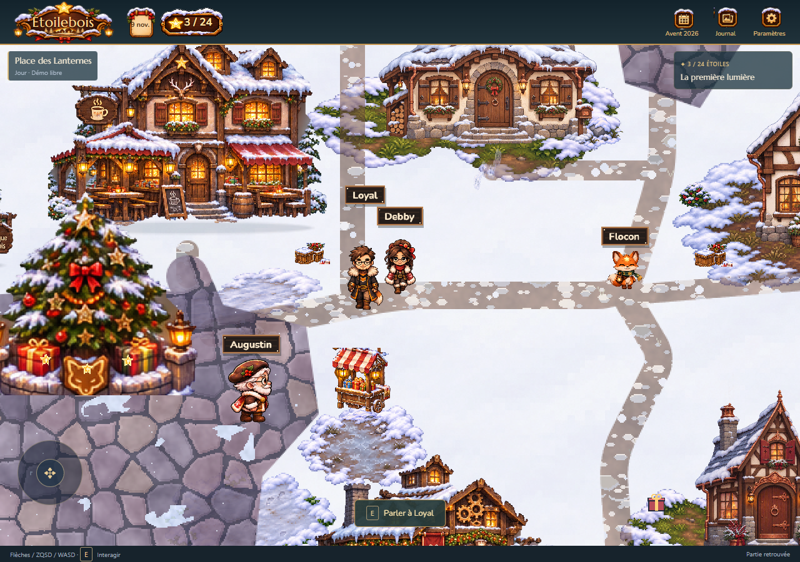
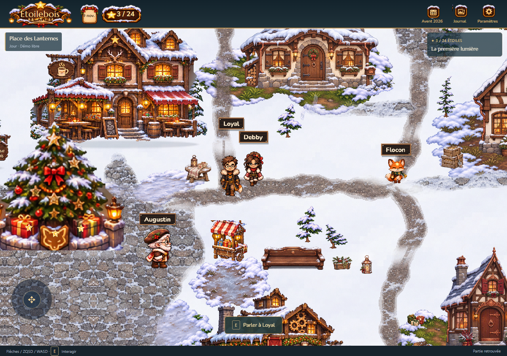
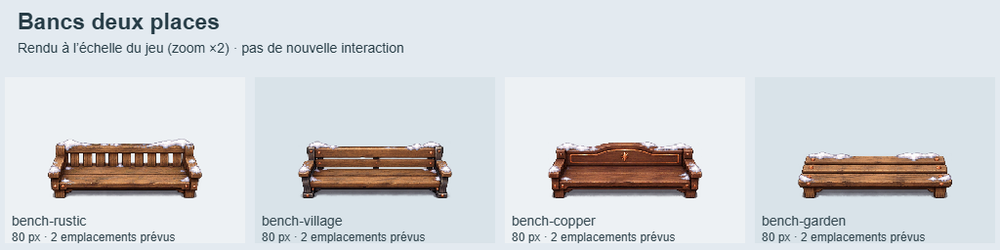
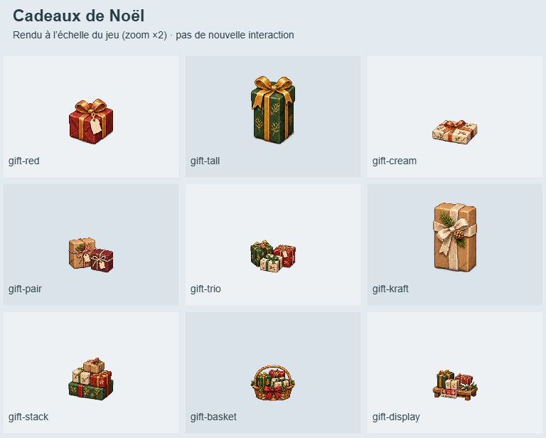
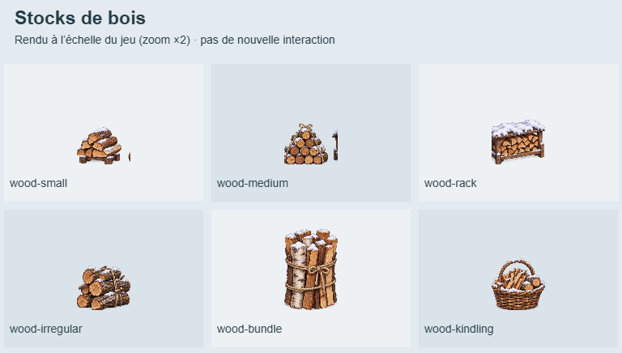
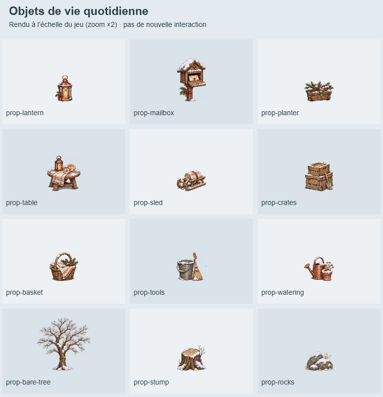

Étoilebois D.3.5 — validation artistiqueVersion 0.7.5 · proposition pour validation artistique · aucune fusion ni mise en ligne
Étoilebois — la magie dans les détails
L’implantation D.3.4 et les quatre intérieurs sont conservés. Cette galerie présente les captures réelles de D.3.4 et D.3.5, les mêmes cadrages rapprochés et les sprites d’exécution à leur échelle de jeu.
160 ornements placés, 5 bancs deux places, 23 arbres dans les quatre quartiers. Les chiffres distinguent les variantes créées de celles employées dans la scène. Le bilan final des tests, les tailles et les SHA-256 accompagnent les deux ZIP dans LIVRAISON-D35.md.
Village complet
Vue générale
Chemins et places enneigés
Chemin principal
Raccords et croisements
Place centrale

Quatre matières — échelle du jeu ×2Cinq jardins, quatre familles de clôtures
Jardin J1
Jardin J2
Jardin J3
Jardin J4
Jardin JL

Modules d’exécution — poteaux, panneaux, profils et vantauxAccessoires et petits coins habités
Banc et petit bosquet
Cadeaux et bois près de l’atelier
Abords de la bibliothèque
Table et petit coin de marché près de l’auberge

D.3.4 — Table et petit coin de marché près de l’auberge
D.3.5 — Table et petit coin de marché près de l’auberge
Collection bancs — vrais sprites à l’échelle de jeu ×2
Collection cadeaux — vrais sprites à l’échelle de jeu ×2
Collection bois — vrais sprites à l’échelle de jeu ×2
Collection accessoires — vrais sprites à l’échelle de jeu ×2La nature au cœur des quartiers
Cour des Livres
Cour des Veillées
Cour du Foyer
Cour des Artisans
Téléphone émulé
Crépuscule et nuit
Le HUD, les personnages, le sapin, les portraits, les dialogues, les intérieurs et les règles du calendrier restent ceux de D.3.4. Les nouveaux bancs n’ajoutent pas de posture assise extérieure. Le mobile est émulé ; une validation sur téléphone physique reste à effectuer.